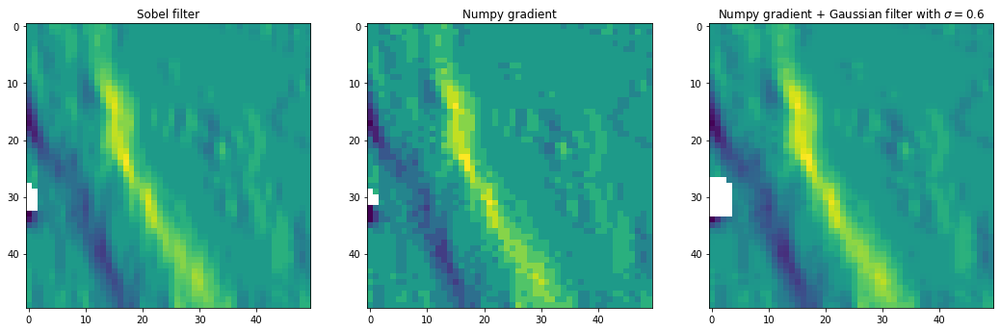
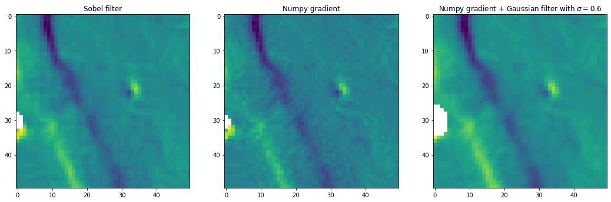
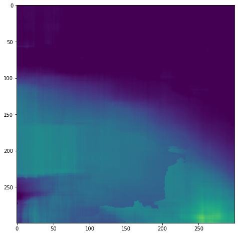
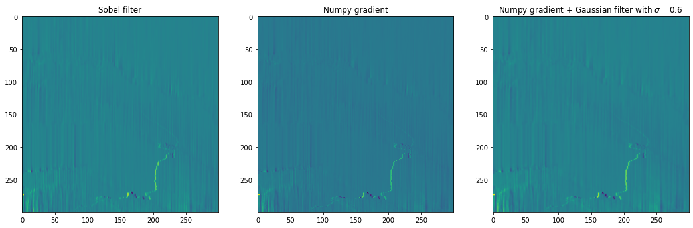
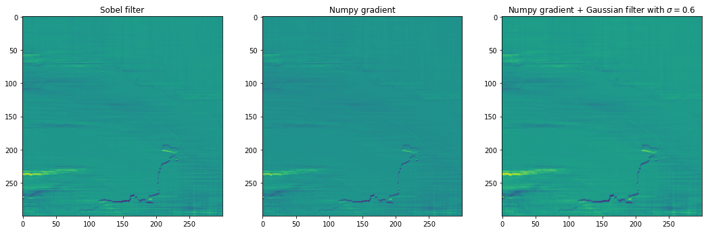

Example 1 – skip size = 8 px (120 m)
Contents
This notebook demonstrats various ways of doing velocity gradient and their comparison.
import pandas as pd
import rasterio
import numpy as np
import matplotlib.pyplot as plt
from scipy.ndimage import sobel, gaussian_filter
Example 1 – skip size = 8 px (120 m)¶
df = pd.read_csv('../results_agu21.csv', dtype=str)
## Example results
demo = df.loc[41]
print(demo)
Date LS8-20180304-20180405
Chip (px) 64
Resolution (px) 8
Prefilter NAOF
Subpixel pyrUP
Software autoRIFT
Vx /home/jovyan/Projects/PX_comparison/PX/autoRIF...
Vy /home/jovyan/Projects/PX_comparison/PX/autoRIF...
OIE-x 0.1171875
OIE-y 0.205078125
SS-x 0.6159315
SS-y 0.77401435
Name: 41, dtype: object
with rasterio.open(demo.Vx) as srcx, rasterio.open(demo.Vy) as srcy:
vx_full = srcx.read(1)
vy_full = srcy.read(1)
nonNaN_pts_idx = np.logical_and(vx_full > -9998, vy_full > -9998)
vx_full[~nonNaN_pts_idx] = np.nan # replace NaN points with np.nan
vy_full[~nonNaN_pts_idx] = np.nan # replace NaN points with np.nan
# Example velocity field (glacier channel, off-ice area, noise patches, and no-data value)
fig, axtmp = plt.subplots(1, 1, figsize=(12, 12))
axtmp.quiver(np.flipud(vx_full[250:300, 285:325]), np.flipud(vy_full[250:300, 285:325]))
# plt.quiver(vx_full[100:150, 200:250], vy_full[100:150, 200:250])
<matplotlib.quiver.Quiver at 0x7f8489764730>
Three different ways of getting \(\frac{\partial V_x}{\partial x}\)¶
a = sobel(vx_full, axis=1, mode='constant')
b = np.gradient(vx_full, axis=1)
c = gaussian_filter(b, 0.6)
fig, ax1 = plt.subplots(1, 3, figsize=(18, 6))
ax1[0].imshow(a[250:300, 285:335])
ax1[0].set_title('Sobel filter')
ax1[1].imshow(b[250:300, 285:335])
ax1[1].set_title('Numpy gradient')
ax1[2].imshow(c[250:300, 285:335])
ax1[2].set_title('Numpy gradient + Gaussian filter with $\sigma = 0.6$');

Three different ways of getting \(\epsilon_{xy}\)¶
# =========== Note: this is to correct a reversed Sobel filter along the y direction.
vy_full = np.flipud(vy_full)
vx_full = np.flipud(vx_full)
# ===========
duydx_a = sobel(vy_full, axis=1, mode='constant')
duxdy_a = sobel(vx_full, axis=0, mode='constant')
duydx_b = np.gradient(vy_full, axis=1)
duxdy_b = np.gradient(vx_full, axis=0)
# =========== transfer back to image axis
duydx_a = np.flipud(duydx_a)
duxdy_a = np.flipud(duxdy_a)
duydx_b = np.flipud(duydx_b)
duxdy_b = np.flipud(duxdy_b)
exy_a = 0.5 * (duxdy_a + duydx_a)
exy_b = 0.5 * (duxdy_b + duydx_b)
exy_c = gaussian_filter(exy_b, 0.6)
fig, ax2 = plt.subplots(1, 3, figsize=(18, 6))
ax2[0].imshow(exy_a[250:300, 285:335])
ax2[0].set_title('Sobel filter')
ax2[1].imshow(exy_b[250:300, 285:335])
ax2[1].set_title('Numpy gradient')
ax2[2].imshow(exy_c[250:300, 285:335])
ax2[2].set_title('Numpy gradient + Gaussian filter with $\sigma = 0.6$');

Example 2 – original resolution (15 m)¶
## 2nd Example results
demo = df.loc[25]
print(demo)
Date LS8-20180304-20180405
Chip (px) 65
Resolution (px) 1
Prefilter Gau
Subpixel parabolic
Software Vmap
Vx /home/jovyan/Projects/PX_comparison/PX/Vmap/pa...
Vy /home/jovyan/Projects/PX_comparison/PX/Vmap/pa...
OIE-x 0.15759776532649994
OIE-y 0.17998206615447998
SS-x 0.3948701
SS-y 0.33154497
Name: 25, dtype: object
with rasterio.open(demo.Vx) as srcx, rasterio.open(demo.Vy) as srcy:
vx_full = srcx.read(1)
vy_full = srcy.read(1)
nonNaN_pts_idx = np.logical_and(vx_full > -9998, vy_full > -9998)
vx_full[~nonNaN_pts_idx] = np.nan # replace NaN points with np.nan
vy_full[~nonNaN_pts_idx] = np.nan # replace NaN points with np.nan
fig, axtmp = plt.subplots(1, 1, figsize=(12, 8))
sob = axtmp.imshow(vx_full[950:1250, 1500:1800], vmin=0, vmax=1)
# fig.colorbar(sob, ax=axtmp)

Three different ways of getting \(\frac{\partial V_x}{\partial x}\)¶
a = sobel(vx_full, axis=1, mode='constant')
b = np.gradient(vx_full, axis=1)
c = gaussian_filter(b, 0.6)
fig, ax1 = plt.subplots(1, 3, figsize=(18, 6))
ax1[0].imshow(a[950:1250, 1500:1800])
ax1[0].set_title('Sobel filter')
ax1[1].imshow(b[950:1250, 1500:1800])
ax1[1].set_title('Numpy gradient')
ax1[2].imshow(c[950:1250, 1500:1800])
ax1[2].set_title('Numpy gradient + Gaussian filter with $\sigma = 0.6$');

Three different ways of getting \(\epsilon_{xy}\)¶
# =========== Note: this is to correct a reversed Sobel filter along the y direction.
vy_full = np.flipud(vy_full)
vx_full = np.flipud(vx_full)
# ===========
duydx_a = sobel(vy_full, axis=1, mode='constant')
duxdy_a = sobel(vx_full, axis=0, mode='constant')
duydx_b = np.gradient(vy_full, axis=1)
duxdy_b = np.gradient(vx_full, axis=0)
# =========== transfer back to image axis
duydx_a = np.flipud(duydx_a)
duxdy_a = np.flipud(duxdy_a)
duydx_b = np.flipud(duydx_b)
duxdy_b = np.flipud(duxdy_b)
exy_a = 0.5 * (duxdy_a + duydx_a)
exy_b = 0.5 * (duxdy_b + duydx_b)
exy_c = gaussian_filter(exy_b, 0.6)
fig, ax2 = plt.subplots(1, 3, figsize=(18, 6))
ax2[0].imshow(exy_a[950:1250, 1500:1800])
ax2[0].set_title('Sobel filter')
ax2[1].imshow(exy_b[950:1250, 1500:1800])
ax2[1].set_title('Numpy gradient')
ax2[2].imshow(exy_c[950:1250, 1500:1800])
ax2[2].set_title('Numpy gradient + Gaussian filter with $\sigma = 0.6$');
